The Best Dog Breeds for Kids & Families
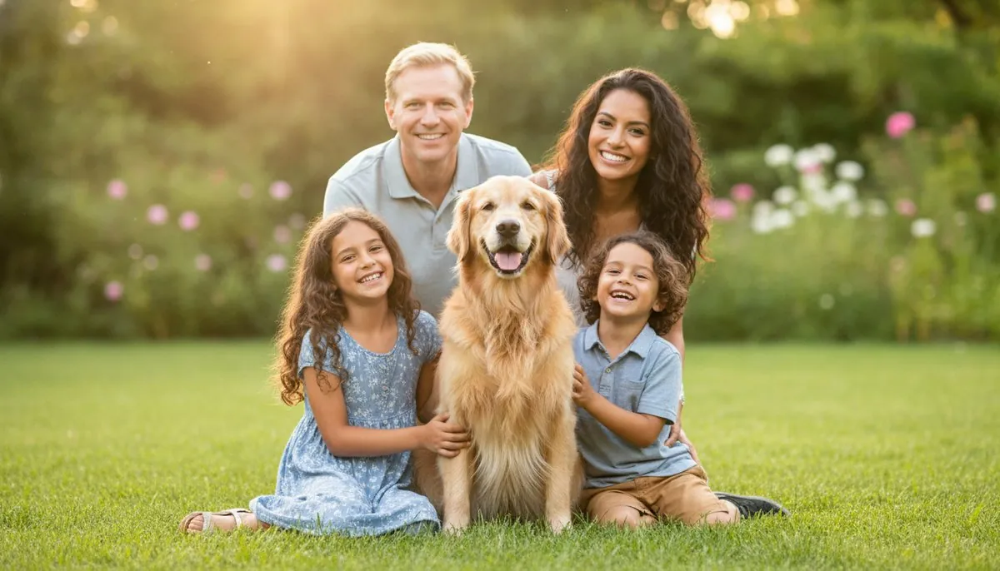
A dog can be the best thing that ever happens to a childhood — a patient playmate, a reason to run around outside, and a daily lesson in empathy and responsibility. Research even links growing up with a dog to lower stress and a stronger immune system. But not every dog suits a busy home with small children, and the wrong match is hard on the kids and the dog.
The good news: a handful of breeds have earned a reputation for being calm, sturdy and endlessly tolerant. One honest caveat first — breed is a starting point, not a guarantee. How a dog is raised, trained, socialized and supervised matters more than any label. Use this to narrow the search, then meet the actual dog.
What actually makes a dog good with kids
- A patient, forgiving temperament — low reactivity to noise, grabbing and sudden movement.
- The right size — sturdy enough to shrug off an accidental stumble, but not so giant it bowls a toddler over. Medium builds are often the sweet spot; toy breeds can be fragile and very large breeds need space and supervision.
- Matching energy — lively enough to keep up with play, trainable enough to switch off indoors.
- People-oriented & trainable — wants to be in the middle of family life and learns house manners easily.
10 family-friendly dog breeds
1. Labrador Retriever
The all-time classic for a reason — soft-mouthed, people-pleasing and remarkably resilient to childhood chaos. Channel the energy with daily fetch and walks; an under-exercised Lab gets mouthy and bouncy. Watch-out: the gangly adolescent stage can knock over toddlers, so teach "four paws on the floor" early.
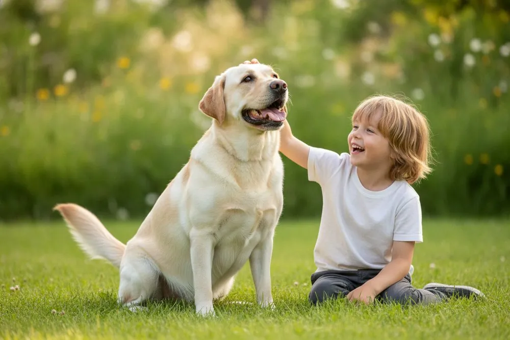
2. Golden Retriever
Soft-tempered, patient and almost intuitive with children's moods. Brush a few times a week and expect serious shedding. Watch-out: Goldens crave companionship and don't do well left alone all day.
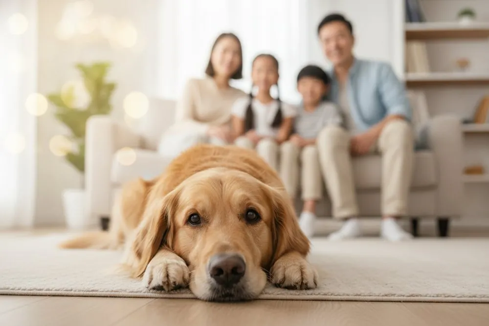
3. Beagle
Sturdy for its size and endlessly merry — bred to live in packs, so it thrives in a busy family. Watch-out: that nose wanders (secure fencing helps), they can be vocal, and they're champion counter-surfers for food.
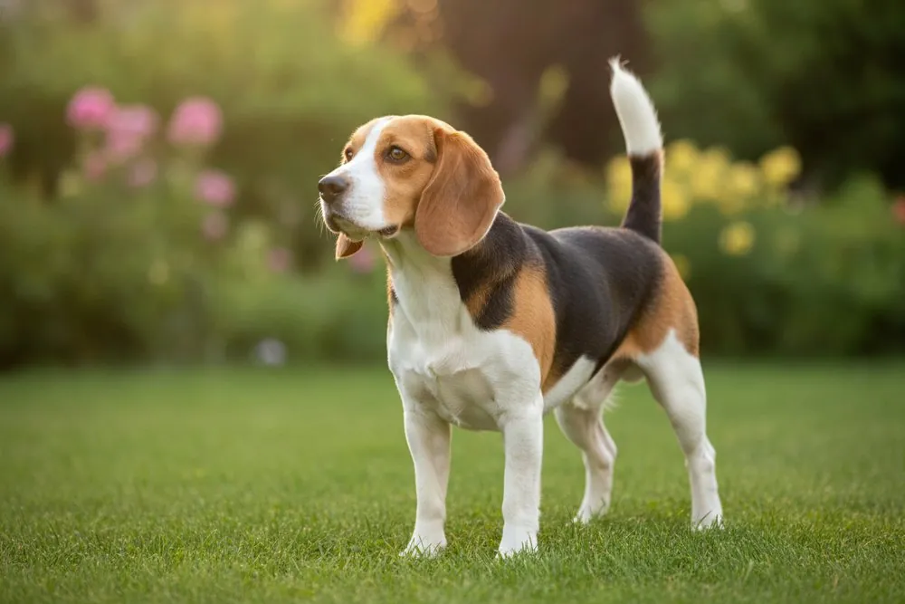
4. Bulldog
Docile, affectionate and utterly unbothered by noise — the couch companion that tolerates toddler antics. Watch-out: as a flat-faced breed it overheats easily (short walks, cool rooms), and vet costs can run higher.
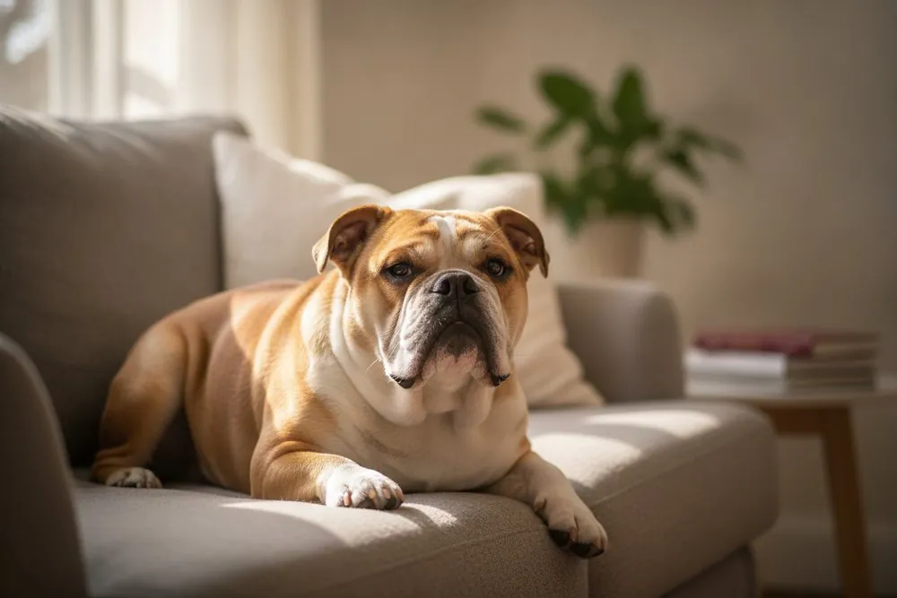
5. Poodle & Doodle mixes
One of the smartest, most trainable dogs, and low-shedding — a top pick where allergies are a concern. A Standard Poodle is sturdier around young kids than a Toy. Watch-out: budget for grooming every 4–6 weeks, and give that big brain a job or it invents mischief.
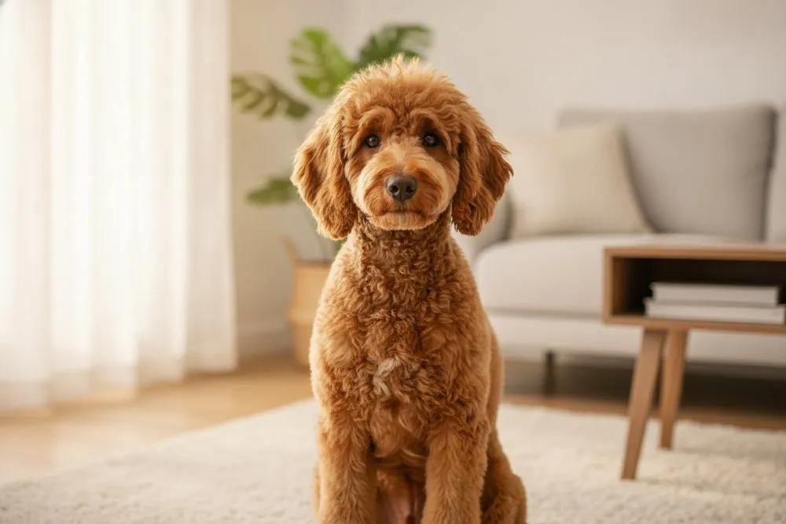
6. Boxer
The class clown — goofy, devoted and naturally gentle with "their" children, with a protective streak. Watch-out: strong and exuberant well into adulthood, so early obedience training and toddler supervision are a must.
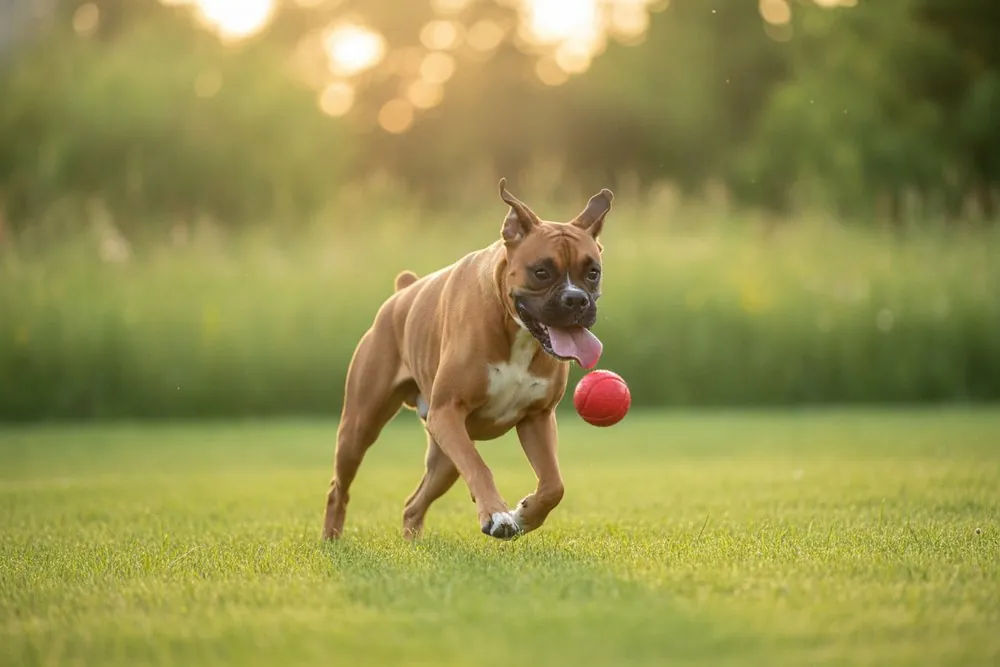
7. Newfoundland
The original "nanny dog" — calm, sweet-natured and watchful over little ones. Watch-out: sheer size near small children, heavy shedding and drool, a need for cool spaces, and a shorter lifespan (~8–10 years).
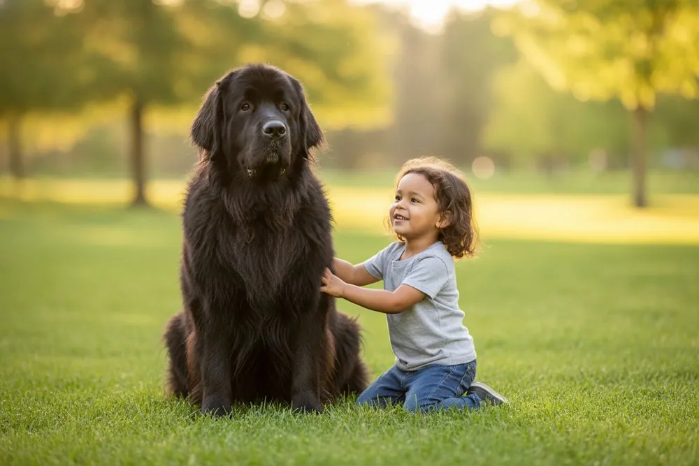
8. Cavalier King Charles Spaniel
Cuddly, adaptable and happiest wherever the family is — equally content in a flat or a house. Watch-out: small and a little delicate, so supervise with rough toddlers, and choose health-testing breeders (the breed is prone to heart issues).
9. Bernese Mountain Dog
Mellow, affectionate and rock-steady — a gentle giant that bonds deeply with the whole family. Watch-out: the large size around small kids, a thick coat to groom, and sadly a short average lifespan (~7–10 years), so plan for vet costs.
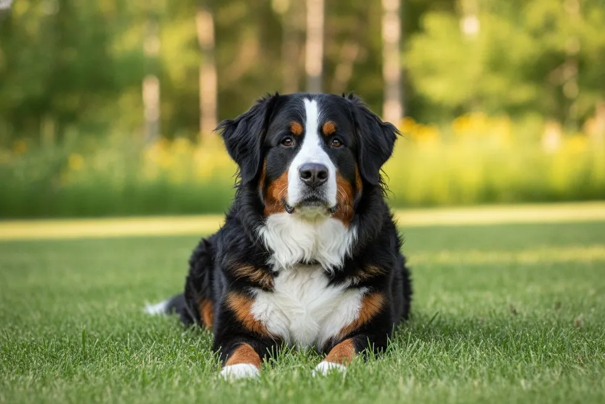
10. The shelter mixed-breed
Don't overlook rescues. Mixes are often the healthiest, most balanced family dogs, and shelter staff can match a dog's known personality to your home. Watch-out: history is unknown, so choose a rescue that does temperament assessments and ask to meet the dog with your kids.
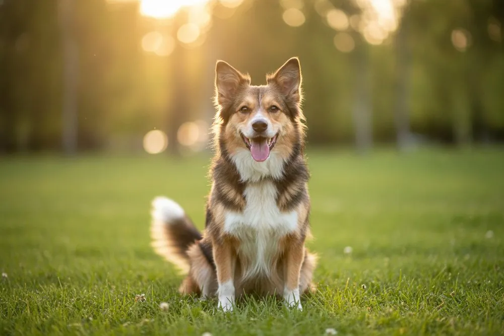
Quick comparison: the 10 at a glance
| Breed | Size | Energy | Shedding / grooming | Best with |
|---|---|---|---|---|
| Labrador | Large | High | Sheds, easy coat | Ages 5+ |
| Golden Retriever | Large | High | Heavy shedder | All ages (with supervision) |
| Beagle | Small–medium | High | Light | Ages 5+ |
| Bulldog | Medium | Low | Light | Calmer homes |
| Poodle / Doodle | Varies | Moderate–high | Low shed, high grooming | Allergy-prone families |
| Boxer | Large | High | Light | Older kids |
| Newfoundland | Giant | Moderate | Heavy, drools | Roomy homes |
| Cavalier | Small | Moderate | Moderate | Gentle, older kids |
| Bernese | Giant | Moderate | Heavy | Cool climates, space |
| Shelter mix | Any | Varies | Varies | Meet the dog first |
Still unsure? Our Breed Finder narrows the list by size, energy and grooming in about a minute.
Breeds to think twice about with very young kids
These aren't "bad" dogs — many are wonderful — but they're a harder fit for a home with toddlers, and it's only fair to say so:
- Tiny / toy breeds (Chihuahua, toy breeds) — fragile enough to be injured by rough handling, and some will snap defensively when frightened.
- High-drive working breeds (Border Collie, Australian Shepherd, Belgian Malinois) — brilliant but need intense exercise and a job, and may try to herd or nip running children. Better suited to experienced, very active families with older kids.
- Large guardian breeds — loyal but strong-willed and best handled by people with breed experience.
Match the dog to your child's age
- Babies & toddlers (0–4): lean toward the calmest, sturdiest, lowest-drive dogs, and expect to manage both closely. A laid-back adult rescue with a known temperament is often easier than a puppy.
- Young kids (5–9): most family breeds shine here — involve the kids in gentle care and simple training.
- Older kids & teens (10+): can handle more active breeds and take on real walking and feeding duties.
Puppy or adult? Puppies are adorable but they nip, aren't house-trained, and need enormous time — a tough combo with toddlers. A calm adult dog with a known personality is frequently the smarter family choice.
How to introduce a new dog to your kids
- Let the dog approach on its own terms — no crowding or chasing.
- Teach kids to offer a treat with a flat hand and pet the chest or shoulder, not the head.
- Create a dog-free zone for the kids and a kid-free zone for the dog (its crate or bed is off-limits).
- Supervise every interaction early on — and never leave under-5s alone with any dog.
- Make "leave the dog alone while it eats or sleeps" a firm house rule.
- Learn the dog's stress signals — lip-licking, yawning, turning away, "whale eye" (whites showing) — and give it a break when you see them.
Keeping kids and dogs safe together
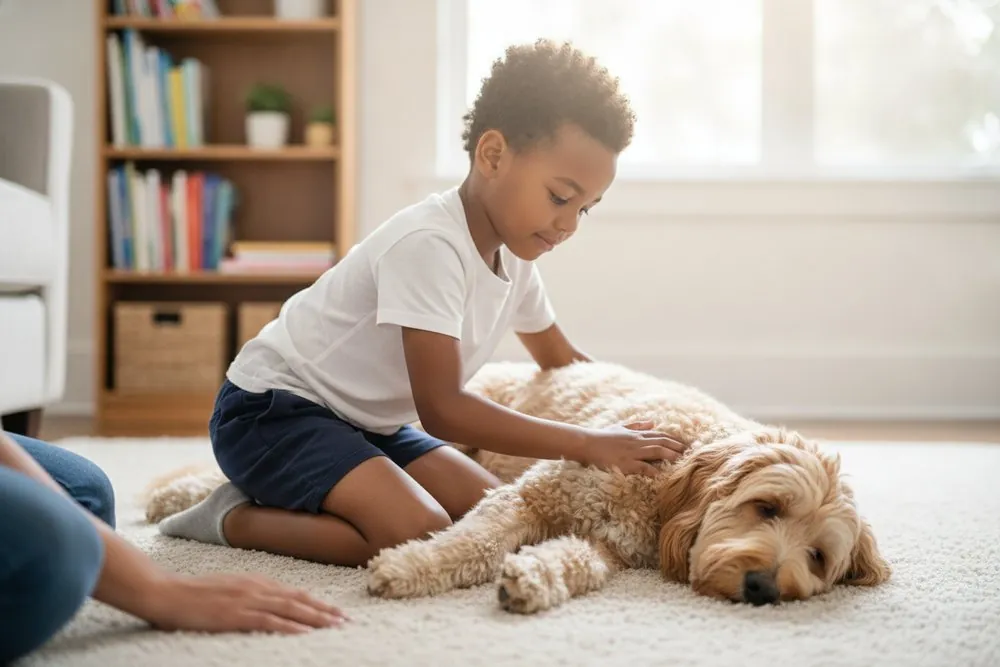
Most problems are prevented by a few simple habits: a quiet retreat the kids leave alone, calm greetings, and adults reading the dog's body language. And because children constantly drop and share food, the whole family should know which human foods are dangerous.
Before a new dog arrives, do a two-minute kitchen check — foods like chocolate and grapes are seriously toxic to dogs. Look up anything in seconds with our free food checker, or print the full list of foods toxic to dogs for the fridge.
Teaching kids dog manners (the part most guides skip)
Most dog bites to children come from a dog the family knows, and many happen when a child is unsupervised or doing something the dog finds scary — hugging, leaning over, or approaching a dog that is eating or resting. The American Veterinary Medical Association and the American Academy of Pediatrics both stress that supervision and teaching kids to read dogs matter more than any breed label. Turn it into a family routine:
- "Be a tree." If a strange or overexcited dog approaches, kids stand still, hands folded, and look at their feet. It teaches calm without a lecture.
- Ask first, then pet. Always ask the owner, let the dog sniff a closed hand, and stroke the chest or shoulder — never reach over the head or grab ears and tails.
- No hugging, riding or kissing the dog's face. Many dogs tolerate hugs; few enjoy them. A hug restricts the dog's ability to move away, which is stressful.
- Let sleeping dogs lie. Wake a resting dog by calling its name from a distance, never by touching it.
- Respect the retreat. When the dog walks away, the game is over. This one rule prevents a surprising number of incidents.
Our guide to dog body language is a great one to read together with older kids — the signs of stress it covers (lip-licking, yawning, turned head, stiff body) are exactly what children should learn to spot.
Feeding, treats and food safety with kids around
Children are generous with snacks, and dropped food is a classic family-dog hazard. Set a few ground rules before the dog comes home:
- Only adults give treats — or kids use pre-measured treats from a jar. Treats, chews and extras should stay under about 10% of daily calories (our feeding calculator gives a daily target).
- Safe, kid-friendly rewards include plain cooked chicken, fresh blueberries and green beans.
- Check the label on anything "sugar-free." Gum, candy, some baked goods and some peanut butters can contain xylitol, which is extremely dangerous to dogs. School bags and coat pockets are a common source.
- Lunchboxes, party snacks and Halloween candy belong on high shelves. Chocolate and grapes and raisins are the two most common culprits.
- Make the dog's meals a quiet zone. Kids do not touch the bowl, the food or the dog while it eats.
If your dog does get into something, don't wait for symptoms — use our "My pet ate something" tool and call your vet, the ASPCA Animal Poison Control Center (888-426-4435) or Pet Poison Helpline (855-764-7661). Fees may apply.
Kid-friendly jobs: age-appropriate dog chores
Giving children a real role builds responsibility, but the adults remain the ones ultimately responsible for the dog's care. A realistic split:
- Ages 3–5: help fill the water bowl with an adult, "sit" and "down" practice with a treat, put toys away.
- Ages 6–9: measure meals with supervision, brush the coat, join short walks holding a second leash while an adult holds the main one.
- Ages 10+: own part of the walking routine, practice training games, help with grooming and bath time.
Expect enthusiasm to dip after the first few weeks. Plan as if you, the adult, will do most of the work — anything the kids take on is a bonus.
What it really costs: kids, dogs and the family budget
A family dog is a long financial commitment. Food, routine vet care, vaccines, grooming, training classes, boarding and an emergency fund all add up, and giant breeds typically cost more in food and medication. Use the pet cost calculator for your own numbers, check the vaccine schedule for what to plan for in the first year, and see how much a puppy really costs in the first year before you commit. Keep your dog lean too — our body condition score tool helps you check.
Fall & holiday note for families
Busy seasons mean more doorbells, guests and sugary treats. Halloween is the big one: keep candy out of reach, keep the dog away from the front door during trick-or-treating, and ask kids to unwrap nothing near the dog. Our Halloween pet safety guide covers the full checklist, and our Thanksgiving guide does the same for the holiday table. Daylight saving time ends on November 1, 2026, so evening walks get dark earlier — a reflective collar or clip-on light helps.
Frequently asked questions
What is the best dog breed for a family with toddlers?
There is no single answer, but Labradors, Golden Retrievers, Cavaliers and calm adult shelter dogs with a known history are common picks. At this age, an adult dog's proven temperament often matters more than the breed name. Never leave a toddler alone with any dog.
Are small dogs good with kids?
Some are, but very small or toy breeds can be injured by accidental rough handling, and frightened small dogs may snap. A sturdier small-to-medium dog, such as a Beagle or Cavalier, is usually a safer match for young children.
Is a puppy or an adult dog better for a family with young children?
Puppies nip, need constant house-training and demand a lot of time, which is hard with very young kids. A calm adult with a known temperament is frequently easier, but a puppy can work well with committed adults and school-age children.
What is the best low-shedding dog for kids with allergies?
Poodles and Poodle mixes are popular because they shed little, though no dog is truly hypoallergenic. Spend time with the specific dog before committing, and talk to your pediatrician or allergist.
At what age can a child walk the dog alone?
Most families wait until kids are in their early-to-mid teens, depending on the dog's size and strength and the child's maturity. Younger children can join walks with an adult holding the main leash.
What if my dog growls at my child?
A growl is communication, not misbehavior — don't punish it. Separate the dog and child calmly, work out what triggered it, and contact your vet and a certified trainer or veterinary behaviorist before the next interaction.
Do dogs really improve children's health?
Some studies link early-life dog exposure to a lower risk of childhood asthma and allergies, and dogs encourage physical activity. The research shows an association, not a guarantee, so treat it as a bonus rather than a reason to get a dog.
Are rescue dogs safe around children?
Many are wonderful family dogs. Choose a shelter or rescue that does temperament assessments, ask about the dog's history with kids, and arrange a meeting with your children present before adopting.
Sources & how we wrote this
Breed sizes and temperament summaries draw on the American Kennel Club breed profiles. Child-safety guidance reflects the American Veterinary Medical Association, the American Academy of Pediatrics, and the American Society for the Prevention of Cruelty to Animals. Food-safety notes follow ASPCA and Pet Poison Helpline guidance. Always ask your veterinarian about your dog’s individual needs. This guide is for information only — not veterinary advice.
Before you bring a dog home
A family dog is a 10–15 year commitment of time, energy and money. Go in with eyes open: our pet cost calculator estimates the real monthly and lifetime cost, and our calorie calculator helps you feed your new friend well from day one. Match the breed's exercise and grooming needs to your routine, and you're setting the whole family up to succeed.